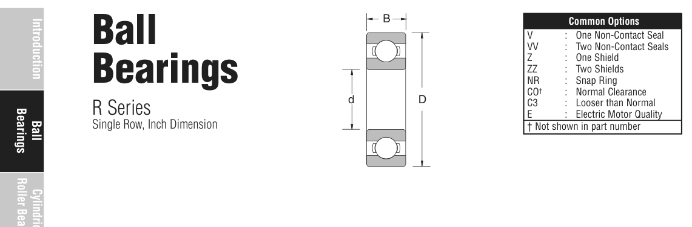

R12 is a NSK ball bearing, bore 19.05 mm, O.D. 41.27 mm, width 7.94 mm, dynamic rating 2,110 lbs. Dimensions, drawing, interchanges and price.

Scanned from the manufacturer catalogue page listing this part number. All part numbers printed on that table share the same drawing.
Blue = inner / outer ring, yellow = rolling element. Drawn to scale from this part's own dimensions for selection reference only - not a manufacturing or assembly drawing.
| Symbol | Dimension | mm | inch |
|---|---|---|---|
| d | Bore diameter | 19.05 | 0.75 |
| D | Outside diameter | 41.275 | 1.625 |
| B | Inner-ring / bearing width | 7.938 | 0.3125 |
| r | Chamfer (min) | 0.787 | 0.031 |
Weights are given in kg. Load ratings are shown in both the original catalogue units and the converted value (1 N = 0.2248 lbf). Data is provided for selection reference only - confirm against the latest official catalogue before ordering.
| Bore d (in) | 0.7500 |
|---|---|
| Outside dia. D (in) | 1.6250 |
| Width B (in) | 0.3125 |
| Basic dynamic load rating Cr (lbs) | 2110 |
|---|---|
| Basic static load rating Cor (lbs) | 1120 |
| Limiting speed - grease (rpm) | 20,000 |
| Weight (kg) | 0.045 |
|---|
| Chamfer r (in) | 0.031 |
|---|---|
| Shaft shoulder (in) | 0.906 |
| Housing shoulder (in) | 1.469 |
| C / P | Equivalent load P (N) | L10 (106 rev) | L10h at 3,000 rpm |
|---|---|---|---|
| 4 | 2,346 | 64 | 356 |
| 6 | 1,564 | 216 | 1,200 |
| 8 | 1,173 | 512 | 2,844 |
| 10 | 939 | 1,000 | 5,556 |
| 15 | 626 | 3,375 | 18,750 |
Basic rating life per ISO 281: L10 = (C/P)3 with C = 9,386 N. Hours = L10 x 106 / (60n). Life-modification factors for lubrication, contamination and temperature (aISO) are not included.
| Brand | NSK |
|---|---|
| Source catalogue | NSK inch product catalogue |
| Catalogue page | p.15 (dimensions) / p.15 (ratings) |
Dimensions in inches and millimetres, load ratings in lbs.
| Designation | Brand | Type | d | D | B/T | Dyn. rating | kg |
|---|---|---|---|---|---|---|---|
| R12ZZ\VV | NSK | Ball | 19.05 | 41.27 | 11.11 | 2,110 lbs | 0.054 |
| 1204 | NSK | Ball | 20 | 47 | 14 | 2,250 lbs | 0.118 |
| 1304 | NSK | Ball | 20 | 52 | 15 | 2,810 lbs | 0.172 |
| 16004 | NSK | Ball | 20 | 42 | 8 | 8.7 kN | 0.048 |
| 2204 | NSK | Ball | 20 | 47 | 18 | 3,210 lbs | 0.141 |
| 2304 | NSK | Ball | 20 | 52 | 21 | 4,050 lbs | 0.236 |
| 3204J | NSK | Ball | 20 | 47 | 20.6 | 3,960 lbs | 0.168 |
| 3304J | NSK | Ball | 20 | 52 | 22.2 | 4,610 lbs | 0.231 |
Send us the quantity you need and we will come back with price and lead time, normally within 24 hours. Equivalent parts from other brands can be quoted at the same time.